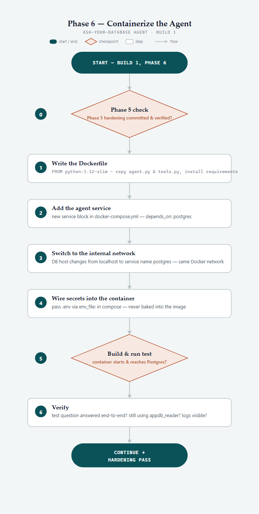
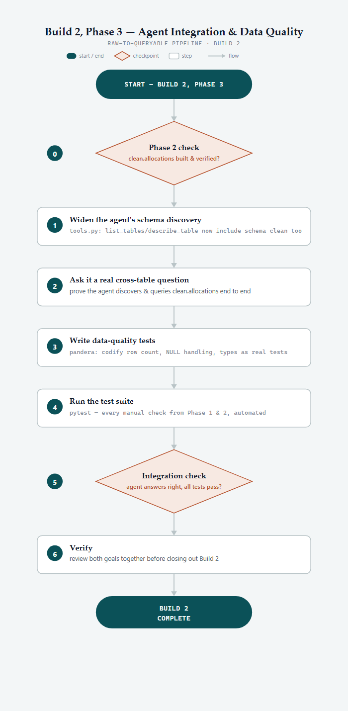
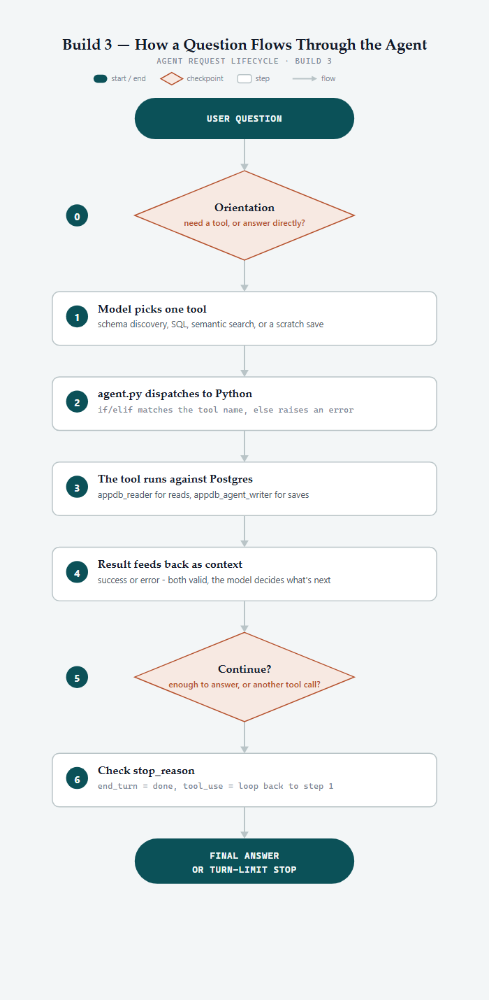
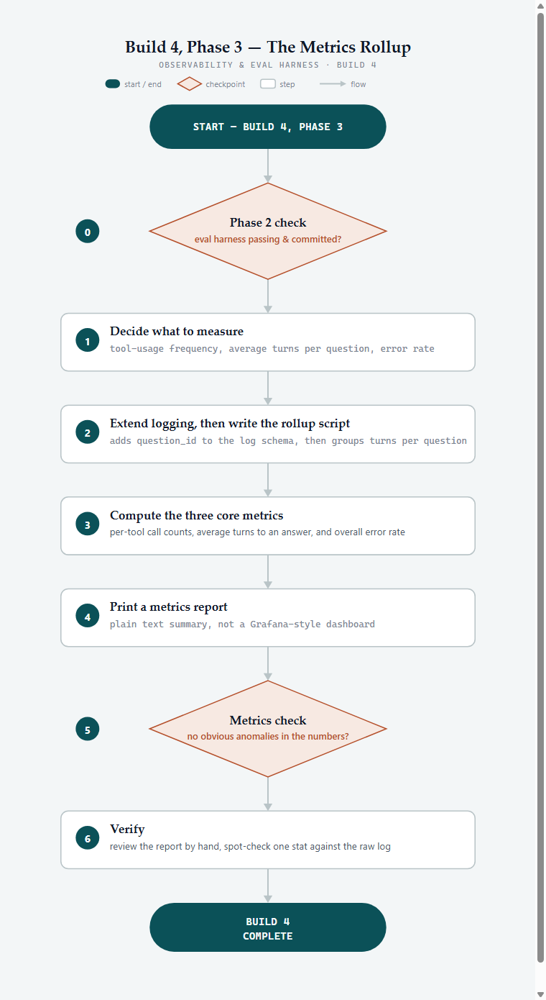
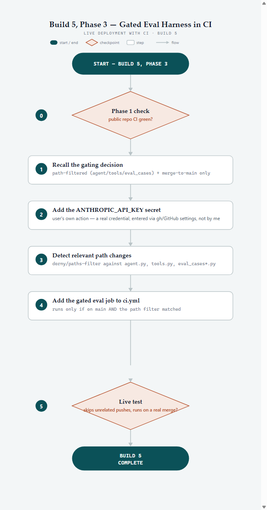
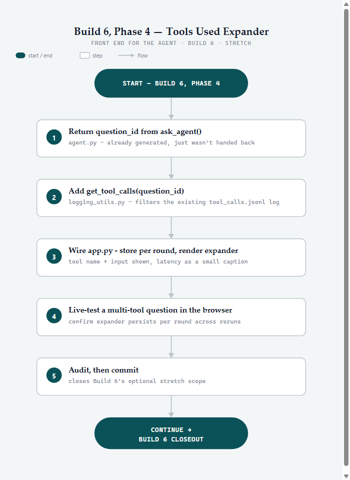
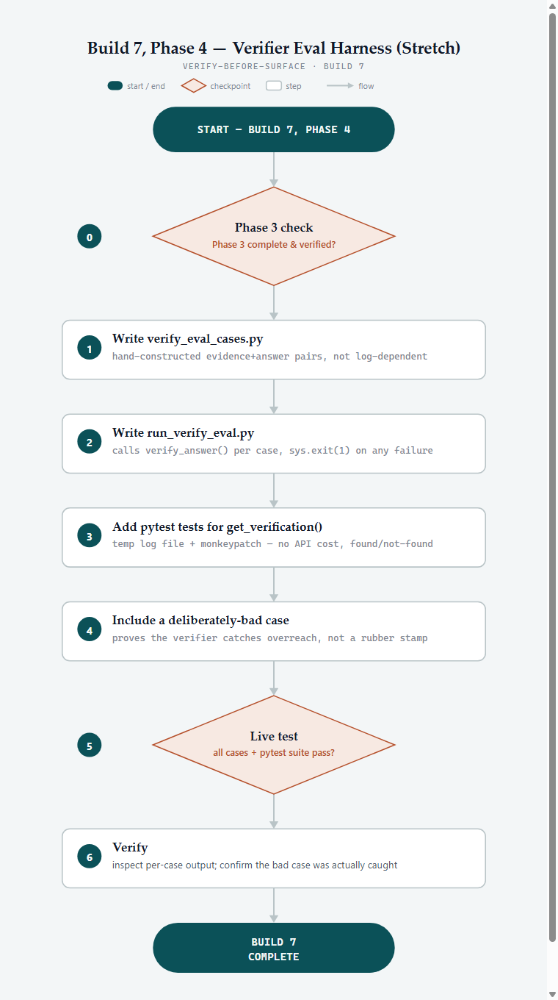
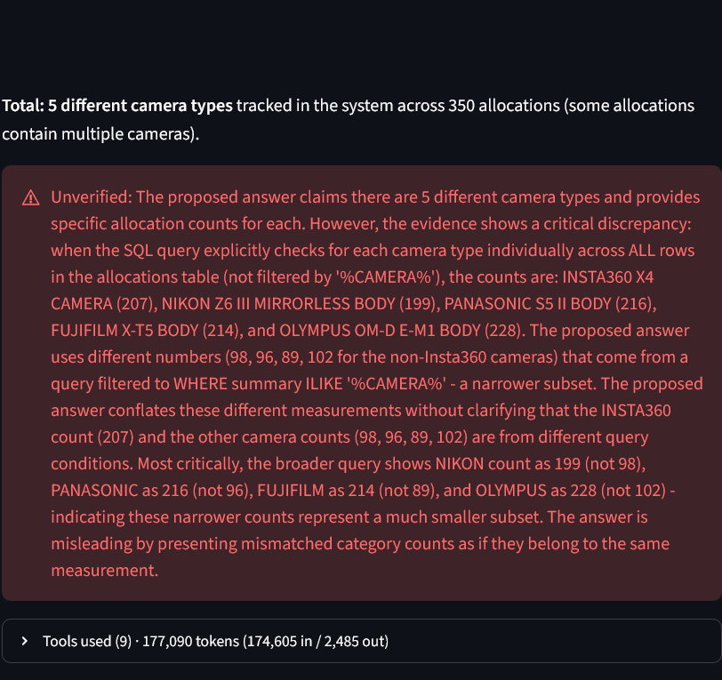
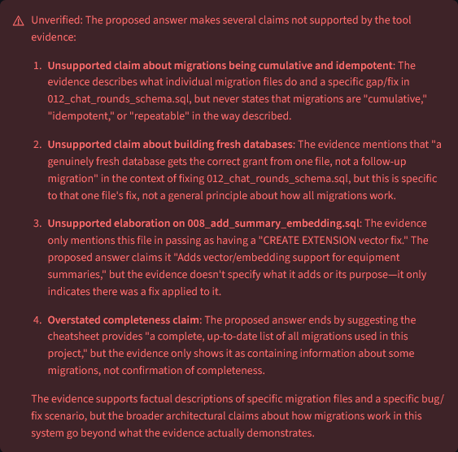

Seven builds, one system — then the failures that made it stronger.
This is the short version of how The Project was built and hardened. The first section follows the seven builds in order; the second follows the live incidents and maintenance work that changed the design after the core system was already working.
docs/; this page is the readable layer.
The agent got better when the system underneath it got better.
The project's biggest reliability and cost problems were not solved by endlessly expanding the prompt. A 177,090-token wrong-answer case led to normalized data; a green-CI-but-stale-service failure led to explicit deployment verification; a history-compounding bug led to cleaner memory boundaries; and a documentation-truncation incident led to extraction-time chunk splitting. The pattern is consistent: use the model where it adds value, but move repeatable structure into data, code, tooling, and tests whenever that is the stronger boundary.
Read the build sequence ↓Ask-Your-Database agent
The foundation is deliberately simple: a hand-built tool-use loop, no LangChain or agent framework, that turns a plain-English question into SQL and runs it through a dedicated read-only Postgres role. Tool-call limits and API-error handling keep the loop bounded. That read-only boundary becomes the project's spine: later builds add capability without giving the model a direct write path to the database.
View flow diagram

Raw-to-queryable pipeline + scratch workspace
A real equipment-allocation export moves through a raw staging schema into typed, clean Postgres data, with explicit handling for blanks and derived duration values. Build 2.5 adds a separate database role and scratch schema so the agent can persist computed results without extending its read-only privileges.
View flow diagram

Retrieval-augmented agent + docs RAG
pgvector embeddings add semantic search over equipment summaries, allowing the agent to answer thematic questions where exact keyword matching is not enough. Build 3.5 applies the same idea to the project's own documentation, creating a searchable record of how the system was built.
View flow diagram

Observability & eval harness
Tool calls move into structured JSON Lines, an end-to-end evaluation harness runs against the live agent, and a metrics rollup stores a history of tool usage, turns, and errors. The goal changes from "it worked" to "I can tell when behavior changes and investigate why."
View flow diagram

describe_table silently failed on a schema-qualified name. The fix was to make the tool's expected inputs and behavior explicit, rather than asking the model to guess how the tool should be used.Reproducible deployment with CI
GitHub Actions proves that the schema, pipeline, and test suite can build from a clean environment. The build also forced a data-governance pivot: public-facing fixtures had to be safe, credentials had to be removed from history, and the repository had to become something another person could actually clone and reproduce.
View flow diagram

Conversational front end
Streamlit turns the existing agent into a persistent chat application. Hybrid tiered memory keeps recent rounds at full fidelity while older rounds collapse into summaries; chat history survives a container restart; and each answer can show which tools it used. The feature makes memory a first-class engineering problem rather than an invisible model detail.
View flow diagram

Verifier / critic agent
The second agent — the Verifier/Critic Agent — checks whether the primary agent's answer is supported by the tool evidence gathered for that question. It does not re-answer the question or add outside knowledge; it checks the answer against the evidence already gathered and surfaces a clear verified/unverified result.
View flow diagram

The 177,090-token question: fix the data, not the prompt
A token-count UI feature surfaced a verifier false positive, a 36.5-second latency regression, and a question that cost 177,090 tokens and returned a wrong answer. Four prompt-level fixes improved individual symptoms but kept the underlying problem alive: checkout information was stored as an unstructured text blob, so the agent had to repeatedly parse it at query time.
View screenshot

clean.allocation_items table, built once from a full audit of 55 distinct item names, replaced repeated keyword parsing. The original question fell to 8,024 tokens and became correct — a 95.5% reduction. The lesson was broader than this one query: move stable structure into the data model.When CI is green but the running app is still old
The fix above passed local tests and CI, but the browser-facing Streamlit service was still running a container created the previous day. A newly started process loaded the corrected code, but the already-running Streamlit service continued using the older code it had loaded when it started. One live question therefore ran against stale code and reached 270,961 tokens.
View screenshot

When correct evidence is still incomplete
A later verification pass found two answers that incorrectly reported the deployment issue as still unresolved, even though it had already been fixed. The evidence was relevant, but the system had truncated the retrieved documentation at 500 characters—cutting off the resolution immediately before the word "Fixed." The first caution-oriented prompt fix restored correctness but created a new cost spike: one question reached 202,821 tokens.
Memory, scratch lifecycle, and finer-grained cost observability
Live review then exposed several smaller but important boundaries. Tiered memory had been persisting inherited history inside each new round, causing roughly 2× compounding and eventually producing a 176,252-token question despite a correct underlying query. The fix separated a round's own turns from the history it inherited, then added a cap on the size of tool results carried forward into future rounds.
Repository and documentation maintenance
A CI failure triggered a broader repository audit and reorganization into src/, migrations/, tests/, and docs/. The same maintenance work also tightened the documentation collection: source-file swaps remove orphaned rows, new extraction rules cover structured lists, and a tracked pre-commit hook keeps the searchable documentation aligned with source changes.
Two prompt fixes that didn't work, and why "remember this prefix" never holds
The day the public demo launched, its first real question - "Tell me about this project?" - exposed a gap in a verifier fix that had already shipped and passed every regression case: a plausible, unconfirmed-not-contradicted claim was hard-failed with no softening, instead of the "Verify further:" framing that case was supposed to get. Reproduced directly, three times, outside the app: the prefix never appeared once, even as the verifier's own reasoning kept independently describing exactly the situation it exists for.
supported / contradicted / unconfirmed) the model must choose as a real tool argument, with the framing now attached in code afterward. Every external caller kept the exact same (supported, reason) shape it always had.